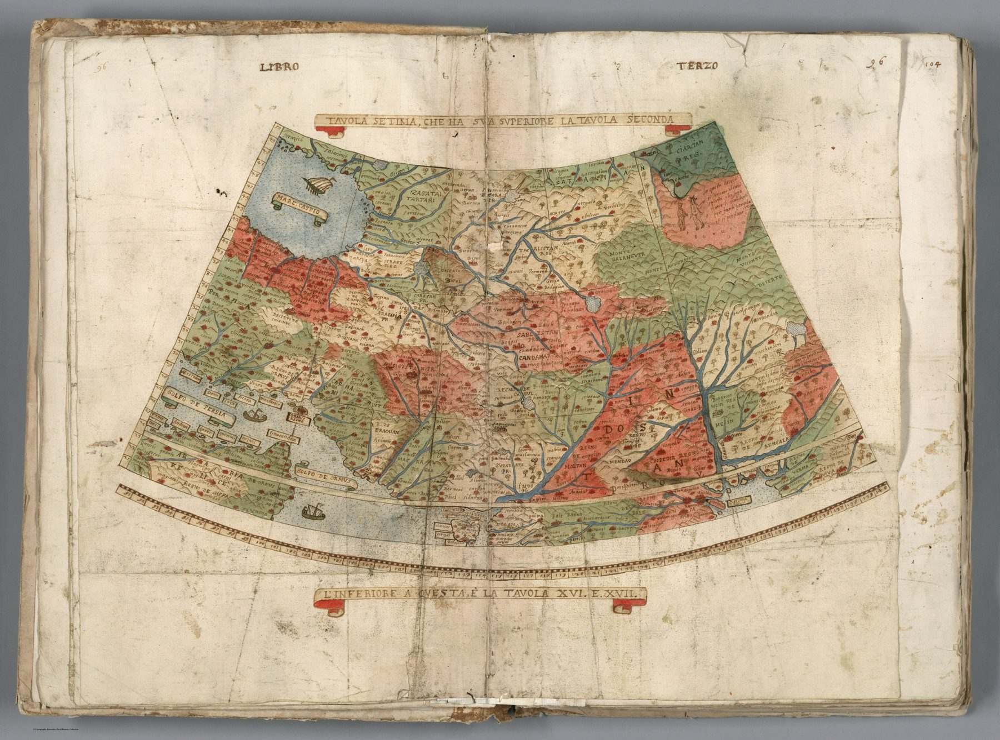

A sheet of a world
This is table seven of Urbano Monte’s manuscript atlas, one of sixty sheets designed to join into a circular planisphere about ten feet across. The individual leaf is therefore intentionally incomplete: its skewed borders and radiating meridians make sense only within the assembled circular earth.
The polar experiment
Monte projected the inhabited world outward from the North Pole. On this Asian sheet, familiar forms are rotated and stretched by the geometry of the whole. The projection serves the whole: it makes the entire world simultaneously available to the viewer.
A manuscript encyclopaedia
The geography draws on Gastaldi, Mercator and other printed authorities, but Monte rewrote it by hand and surrounded it with rulers, peoples, animals, ships and annotations. The result is a private cosmographic synthesis: geography presented as universal knowledge.
On the sheet
The banners above and below the map are binding instructions. The upper one names the sheet – Tavola settima, che ha sua superiore la Tavola seconda, ‘the seventh table, which has the second table above it’ – and the lower one says that Tables XVI and XVII lie beneath. The peninsula itself is on those two sheets; what this leaf holds is the north, Indostan spelled out across the centre, with Delli, Multan and Candahar, the Regno de Bengala at the right, the Golfo de Persia and Golfo de Ormus at the left, and ships riding in the Caspian and the Gulf. The graticule along the curved foot runs from about 90° to 140°, the Ptolemaic longitudes that stretch Asia eastward, and two small figures stand beside a note in the red-washed country at the upper right.
The gaze
Seen from Monte’s pole, India is a wedge of a circle, its familiar outline pulled askew by meridians that converge far to the north. The sheet was made for a wall, to be looked at rather than sailed by. Monte wanted the earth whole and at once, and India’s distortion is the price of that wish.